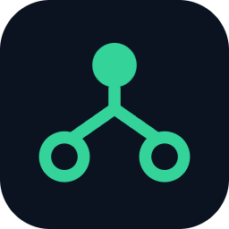
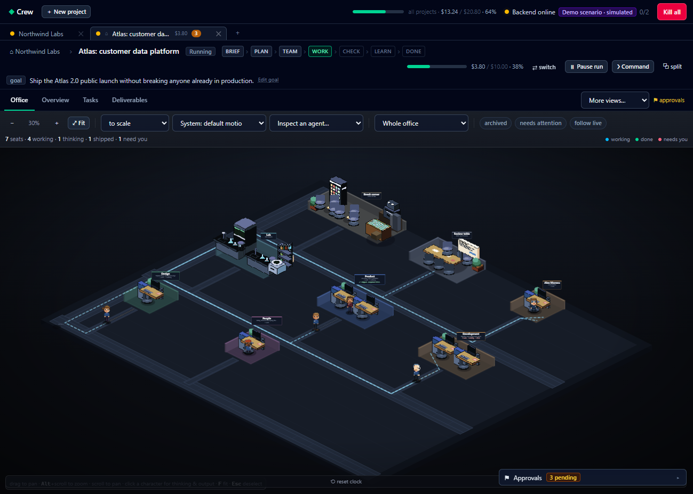

Crew
A playable control room for a real AI agent company.
Give a company a goal. Its agents plan the work, interview and hire each other, run sandboxed commands, hand back verified files, and ask for approval when a call is not theirs to make. The office is a view of the same records, not a separate story.
$ docker compose up --build

A run in progress. Every room, desk and speech bubble is derived from the event stream.
Goal in, verified work out
Six real stages. Each one writes records you can read back.
-
Set the goal
The Captain writes the mission at the command desk, in plain language. The reply lists the actions that actually ran, and a refusal is a reply too.
-
Plan
The orchestrator turns the goal into an epic, features and stories on the board, then promotes whatever is ready into real tasks.
-
Staff
Gaps open hiring loops: an HR head interviews candidates, and the one who lands keeps a face, a voice and a story of their own.
-
Execute
One task, one owner. Shell and Python run inside a Docker container with no network and only the workspace mounted.
-
Verify
A separate verifier grades the result against the task's output contract. Only a verifier verdict can move a score.
-
Reward and learn
Scores, promotions and brain entries follow the verdict, and the floor replays the whole thing as it happens.
What you get
The pieces that make the company legible, and the ones that hold it to account.
Command desk
Orders, questions and ideas in natural language. Assign, reassign, fire, hire, set a budget, start a run. Every turn is a record.
The office
A 2.5D floor drawn from events: walkers, coffee bubbles, a board room that fills when a session is live, a rumour that needs three mouths before it is a concern.
The board
Epics, features and stories. Once a story is promoted, its column is derived from task state, so the board cannot disagree with the engine.
Governance
A board of directors with a chair, portfolio verdicts (on track, at risk, stop) and directives that write real spend caps into its companies.
Budgets and ledger
Per-project and per-company envelopes, a breaker that refuses new spend, and a ledger that reconciles against what was actually spent.
Sandbox or refusal
Agent commands run in Docker with no network and only the workspace at hand. No Docker means no execution. There is no host fallback.
Approvals
Privileged tools pause the run until a human grants once or sets a standing allow. Hard gates (net.post, fs.delete, git.push) ask every time. A project can switch on full autonomy (YOLO), which turns those human gates off on purpose and records each call it would have asked about (ADR 0018).
Security review
Fetched content and risky commands pass a deterministic review gate. Anything suspicious is quarantined by hash until someone releases it.
Memory and brains
Four scoped levels on SQLite: per agent, per department, per project and per company. Verified work is what earns a brain entry, not promises.
What it is not
The project keeps its claims small on purpose.
- Not a hosted service. One server process and one shared workspace per installation, for a person who trusts the machine it runs on.
- Not unsupervised. Demo mode is simulated and free. Live runs bill your provider account, the budget caps the spend, and a verifier pass is not a human review.
- Not a safety layer. The sandbox removes host access; it does not make agent output correct. Read SECURITY.md before giving agents private work.
Run it
Requires Docker with Compose. Both ports bind to loopback only.
# UI: http://localhost:5173
# API: http://127.0.0.1:8787 (loopback only)
docker compose up --buildFirst run: the onboarding wizard asks where the company workspace lives and how you want to run agents. Demo mode needs no key and spends nothing.
# backend
cd backend
uv sync --frozen
uv run python -m crew serve
# frontend
cd frontend
npm ci
npm run devTested with Python 3.13 and Node 26. The native path still needs Docker for agent command execution.
# deterministic agents, zero spend, no key
CREW_OFFLINE_LLM=true uv run python -m crew servePlanning, hiring, dispatch, verification, rewards and learning all run with a fake runner. This is the mode the test suite and the demo both use.
Live mode
Connect a provider key from the interface (Configure provider), then switch the run to Live. The key is checked, stored encrypted and never shown again.
- Acceptance-tested: DeepSeek with the Docker sandbox, on Windows.
- Experimental: OpenAI, Anthropic, OpenRouter, and local Ollama.
- Evidence and known limits live in the support matrix.
Questions
Short answers to what people ask before running it.
What does it cost to try?
Nothing. Demo mode uses deterministic simulated agents and spends nothing. Live mode calls your own provider account, and the budget envelope caps the spend.
Is it production ready?
No. It is experimental, single-process software for one trusted workspace. Runs are supervised, and SECURITY.md describes the trust boundaries before you point it at private work.
What are the agents allowed to touch?
A workspace root chosen when the company is founded. Commands run in a Docker container with no network and only that folder mounted. Fetched content and risky commands pass a review gate first.
Where do my provider keys go?
Into an encrypted vault on your machine. Model requests go to the provider you chose, and the key is never rendered back to the interface.
Can I run it without a model key?
Yes. CREW_OFFLINE_LLM=true swaps in a deterministic fake runner, and the whole pipeline still runs end to end for zero spend.
Do agents act on their own?
Supervised by default. The policy engine decides what even reaches an approval gate, privileged tools wait for a human, and every action lands in the hash-chained audit log. A project can switch on full autonomy (YOLO), which turns those human gates off on purpose and records every call it would have asked about (ADR 0018).
Does the office invent anything?
It draws only what the records say. Bubble text comes from message payloads, a surfaced concern needs at least three distinct mouths, and the simulation never invents what was said.
What is CrewAI's role?
Execution. CrewAI runs the crews and their tools. Orchestration, budgets, verification, the board and the audit trail are Crew's own, all of it testable offline.
Documentation
The specification comes first. Code follows the docs, and when they disagree, both get fixed in the same commit.